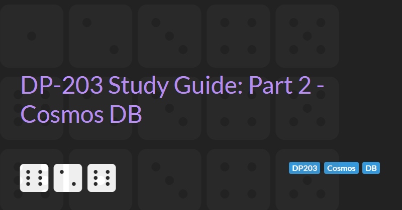

Implementing non-relational data stores
The DP-203: Azure Data Engineering Associate exam requires subject matter expertise in Azure solutions for non-relational data storage. This section of the syllabus includes:
- Azure Storage
- Cosmos DB
- Azure Data Lake
This part 2 guide will cover Cosmos DB.
Introduction to Cosmos DB
Building a highly scalable, globally distributed database is hard.
In 2010, Microsoft realised they needed to build something very different to SQL server to handle global distribution needs.
In 2015, Microsoft released Azure Document DB, a distributed database that supported SQL queries over JSON documents.
In 2017, Azure Document DB was rebranded as Cosmos DB.
Features
- Cloud based NoSQL database / Database as a service (DaaS)
- Turnkey globally distributed
- Serverless architecture
- No operational overhead
- No schema or index management (=> no application downtime while schema is migrated)
- Multi-model (Key value, Json documents, graph, and table/columnar data store)
- Multi-language APIs (Java, .NET, Python, Node.js, JavaScript etc.)
- Highly available, reliable and secure (always on, 99.999% uptime, < 10ms latency)
- Unlimited scale for both storage and throughput.
- Supports configurable consistency levels: strong, eventually, consistent prefix, session and bounded-staleness.
Use cases
- IoT
- Retail and marketing
- Gaming
- Web and mobile applications
Multi-model support
Cosmos DB supports data storage in a number of model. Each model has its own API
- Key-value -> Table API
- Wide-column (table/columnar) -> Cassandra API
- Graph -> Gremlin API
- Document -> Core(SQL) API and MongoDB API
Document APIs
The Core(SQL) API is the original Document DB platform API and support storage of Json documents.
The SQL API is also the only API that supports a SQL-like query language and a server-side programming model for transactional stored procedures.
Exam tip: any question references a SQL-like query language then Core(SQL) API will be the answer.
MongoDB API is an API that is fully compatible with MongoDB (implementing the same wire protocol and supporting storage of documents in BSON format).
This API allows migration of existing MongoDB solutions to Cosmos DB with minimal changes to the connection string.
Microsoft advise that the Core(SQL) API should be used for new developments.
Note: Although both the Core(SQL) and MongoDB APIs are Document-oriented they store data in different formats and cannot both be used on the same database.
Cosmos DB Table API
The Cosmos DB Table API provides a key-value store API that supported the same protocol as Azure Table Storage API. It can be viewed as a premium offering for this API.
Existing customers using Azure Table Storage can migrate to Cosmos DB using the Table API.
Row values can be simple value like a string or number.
Rows cannot store objects/documents.
Cosmos DB Cassandra API
Cassandra is a wide column NoSQL database. The Cosmos DB Cassandra API supports the same wire protocol as Cassandra allowing simple migrations from
Cassandra to Cosmos DB and the use of Cassandra tools such as Data Explorer and SDKs such as the Cassandra CSharp Driver.
Cosmos DB Gremlin API
The Cosmos DB Gremlin API supports the Gremlin Graph data model. Again, the Gremlin wire protocol is supported (allowing easy migration from Gremlin to Cosmos DB).
Efficient for graph traversal (e.g. friends in social networks, device connections in IoT solution, etc.)
Provisioning a Cosmos DB Account
When provisioning a Cosmos DB account you need to select the API that the Cosmos DB will support. Only one API is supported per account and this value cannot be changed. Properties such as multi-region support and multi-master writes can be configured during account creation and can be modified later.
An account must have a unique name as this is used as part of the public URL to access the account (e.g. https://[Resource_group_name][Cosmos_DB_Account_Name][Region].documents.azure.com).
The account is the top level component of data organisation.
- The Account contains Databases (also known as Keyspaces in the Cassandra API).
- Databases/Keyspaces contain Containers which are realised as Collections (Core API and MongoDB API), Tables (Cassandra API and Table API), or Graphs (Gremlin API)
- Containers contain Items which are realised as Documents (Core API and MongoDB API), Rows (Cassandra API), Items (Table API), or Nodes and Edges (Gremlin API)
- Containers can also contain stored procedures, user-defined functions, triggers, conflicts, and merge procedures (note this is not at the database level like with traditional SQL server)
Creating a database container
Accounts using provisioned throughput can contain up to 500 databases and 500 containers (although only 25 containers per database can use shared throughput).
Accounts using serverless throughput can contain up to 500 containers.
Measuring Performance
There are two main aspects to database performance: latency and throughput
- Latency: how fast is the response for a given request? To lower latency we can make sure service is close to the user.
- Throughput: how many requests can be served within a specific period of time? Cosmos DB is designed to handle many workloads. The maximum throughput can be increased by specifying more Request units (for an increased cost).
Throughput
Request Units (RU/s) are used to measure throughput. RUs represent a combination of memory, CPU and IOPs. RUs can be measured using the Data Explorer (see the Query Stats tab in the Results).
RUs can be provisioned at the database (shared) or dedicated for a particular container. The minimum number of RUs that can be provisioned is 400. The default maximum is 100,000 RUs (but this limit can be increased and is, theoretically, unlimited).
400 RUs is roughly $0.58 per hour.
If reserved throughput limits are exceeded than requests are throttled (APIs return a 429 - Too Many Requests error). Multiple 429 errors indicate the provisioned limit should be increased.
It is recommended to set the throughput at the container level.
Horizontal Scaling
Cosmos DB can store an unlimited amount of data.
A single Cosmos DB container may be implemented by multiple physical machine (depending on the data storage requirements and provisioned RU throughput).
Partitioning
Each container has a partition key. The partition key determines how the container divides data amongst the underlying physical machines. All data with a given partition key becomes part of the same logical partition (data is stored together). Multiple logical partitions may be stored on the same underlying physical machines. However this is internal to CosmosDB and is not something which we have control over.
- Partitioning: the items in a container are divided into distinct subsets called logical partitions.
- Partition key is the value by which Azure organises your data into logical divisions.
- Logical partitions are formed based on the value of a partition key this is associated with each item in a container.
- Physical partitions: internally, one or more logical partitions are mapped to a single physical partition. A single logical partition cannot be divided into multiple physical partitions. Logical partitions can, over time, be moved from one physical partition to another - this migration is completely transparent.
Avoiding hot partitions
Container RUs are divided between the logical partitions. RUs allocated to one partition cannot be used by other partitions. This means that if one partition is very active then it may reach the RU threshold and cause 429 - Too Many Requests error even if RUs are available in other partitions.
To ensure logical partitions are used effectively, a partition key that evenly distributes data amongst partitions should be used. If one partition has the majority of the data then it will consume more RUs and may be rate limited - this is a 'hot' partition on store.
Similarly, we should try to ensure all queries can be distributed evenly across all available partitions. A query that just queries one partition can result in that partition consuming all available RUs and being rate limited - this is a 'hot' partition on throughput. Using a date as a partition key and having a system where most users are querying on the current day could cause a hot partition on throughput.
Single partition and cross partition queries
A single partition query is one where Cosmos DB can infer (from the partition key of the container) that data matching the query being performed can be retrieved from a single partition. This is efficient.
A cross partition (or fan out) query requires Cosmos DB to run a query across all partitions and combine the results. These should be avoided where possible.
Composite keys
Cosmos DB has some limits with regards to data:
- A single document cannot exceed 2MB of data.
- A single logical partition cannot exceed 20GB of data.
Partition keys that result in data that exceeds these limits should be redesigned. One way to do this is to create a composite key from the underlying data that can be used as a partition key with a high degree of cardinality/variability which will result in a large number of logical partitions.
For example, in an application where we track web site activity we may be able to create a composite key that consists of the unique userid and the day that the user visited the site in ddmmyyyy format. This results in more, smaller logical partitions as we create data for the same user on different days in different partitions. This avoids the partition size limit and and allows us to scale further.
The main disadvantage of a highly cardinality partition key is that it can lead to more cross-partition queries.
Partition key best practices
- Evenly distribute storage
- Make sure you pick you partition key that does not result in hot spots within the application
- Have high cardinality
- Use partition key with large number of values
- Examples: user id, product id, GUID
- Evenly distribute request
- RUs evenly distributed across all partitions
- Review
whereclauses of top queries
- Consider document and partition limit while designed partition key
- Max document size = 2MB
- Max logical partition = 20GB
Time to live
Cosmos DB has a time to live feature that can automatically delete data after a given period of time. Time to live is configured against each container's settings and has 3 possible settings:
- Off - items are not automatically deleted
- On - items are deleted after the defined the number of seconds
- On (no default) - items must define a
ttlproperty and only items with attlare deleted (afterttlseconds)
The time to live process works in the background and uses leftover RUs. Data deletion may be delayed if there is not enough RUs. However, even if the time to live process has not executed, queries will not return rows where the ttl has expired.
Global Distribution
Cosmos DB allows data to be easily replicated to different data centres around the world. Simply go into the Azure portal and select the Replicate Data globally, then select the Azure data centres to replicate to. By default any new data centres will be a read replica.
Certain Azure data centres are paired (e.g. UK West and UK South). Regions are paired for cross-region replication based on proximity and other factors.
If we are replicating data for disaster recovery or business continuity purposes then we should choose centres that form a pair to maximise the benefits of the fast connections between these pairs.
If we are replicating data to reduce latency then we should replicate the data to the data centre that is closest to the user (even if this is not a paired region).
Costs for globally distributed Cosmos DB increases with the number of replicates - 2 replicas costs twice the price of the primary database, 3 costs three times etc. You cannot replicate to a database that has a lower 'spec' than the primary.